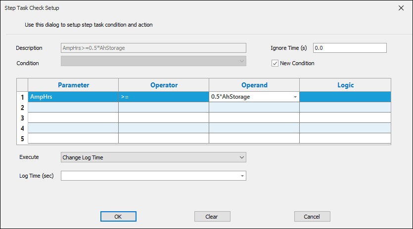

iTest User's Guide
Step Conditions are sequences of one or more expressions joined by a logical operator, which can be either AND or OR. Each expression consists of a parameter, an operator, and an operand. Parameters and operands support simple expressions with only one operator; you can perform addition, subtraction, multiplication, and division. In addition, parameters and operands support the use of channels of all types except for virtual strings and virtual string arrays.
Step Conditions are utilized in the Step Task Check Setup dialog when configuring Step Tasks. For more information about Step Tasks, refer to the Step Tasks documentation.
There are two methods for using step conditions in the Step Task Check Setup dialog:
If you create a new condition in the Step Task Check Setup dialog, the step condition is not reusable. It's only available for the current step task instance, and to reuse the expression it has to be re-entered. This means that if the logic in the environment changes, the expression must also be changed in every instance of its use.
Unlike new conditions, global step conditions are reusable, and the step condition can be referenced from multiple locations. If the logic needs to be changed, it is modified in one location, and the change is applied to all instances of the condition in your solution.
Global step conditions are set up in SolutionBuilder's Step Conditions Editor, which can be accessed by selecting Tests > Step Conditions from the main menu. Steps for setting up global conditions are described in the Creating Global Step Conditions section below.
To create a new step condition, select the New Condition checkbox on the Step Task Check Setup dialog. Selecting this option displays the editor used to define the parameter, operator, operand, and logic of the new step condition. An example of a new step condition is shown below:
New Condition - Schedules

Alternatively, a named and previously written step condition can be selected by using the combo box to the left of the New Condition option. When you select this option, a list of existing step conditions displays.
Global Step Conditions
Step conditions can have an ignore time associated with them. This setting will determine the amount of time (measured in seconds) iTest waits before monitoring the step condition.
To enable or disable the ignore time setting for step conditions, use the following powertek.ini option:
SupportStepConditionIgnoreTime=TRUE/FALSE
To create a new step condition for a master schedule, select <Custom> from the drop-down menu in the Edit Step Task dialog. Selecting this option displays the editor used to define the parameter, operator, operand, and logic of the new step condition.
New Condition - Master Schedules
Global step conditions are reusable across all your schedules and master schedules. When you modify a global step condition, the change is applied to each instance of the step condition in your solution.
To add a new global step condition, do the following:
After you save the solution, the step condition label is automatically generated by combining the values in the Parameter, Operator, and Operand columns. The new step condition will be listed as an option in the Step Task Check Setup and Edit Step Task dialog using the label. If there is an error, a dialog will display indicating the action needed to be taken to correct the error.
Step Conditions Error Dialog
Step Conditions utilize the AutoNameConditions powertek.ini setting to determine whether or not to automatically generate a name/label for the step condition.
To enable or disable automatically generating the name/label, use the following powertek.ini setting:
AutoNameConditions=TRUE/FALSE